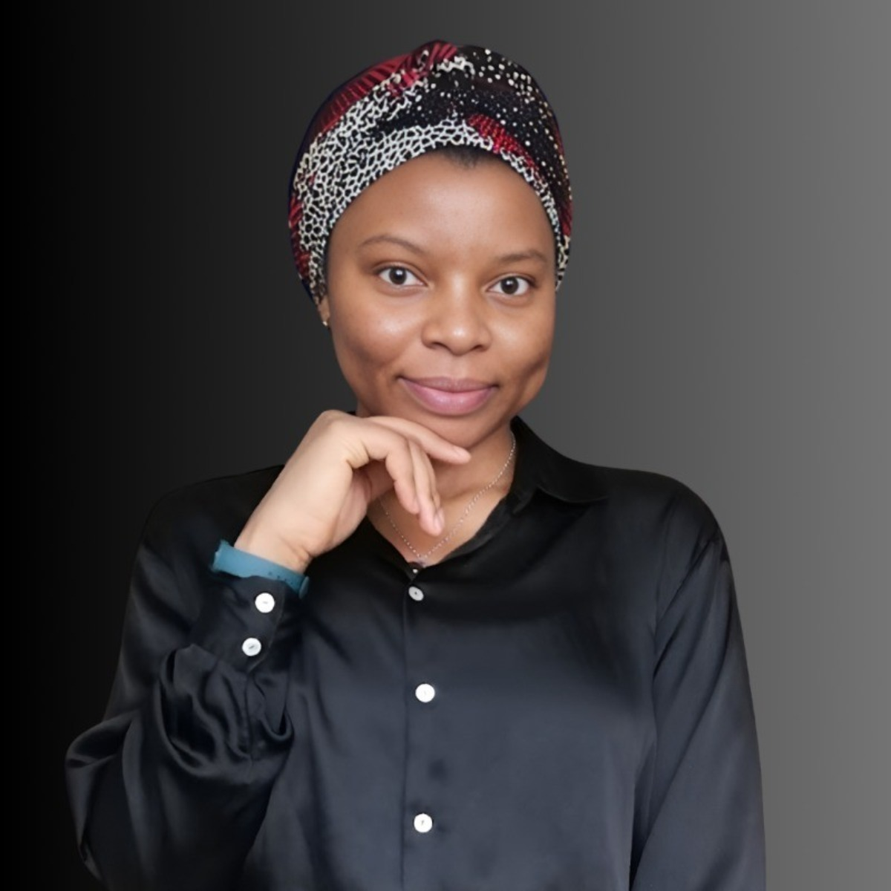

Within-host immunology to age-of-infection epidemiology via a virtual cohort
Journal of the Royal Society Interface — to appear.

University of Manitoba · Winnipeg, Canada
Applied Mathematician · Researcher · Educator
I use research and education to make science accessible and address major societal challenges. My work connects mathematical modelling, biological systems and data analysis, with a commitment to teaching and sharing knowledge.
Postdoctoral Research Fellow in Applied Mathematics
Mathematical models, dynamical systems and biological applications.
→University courses, computational labs and student supervision.
→Mathematics education, inclusion and community engagement.
→Peer-reviewed articles, preprints and research outputs.
→Lecture notes, books, videos and public talks.
→From the dynamics of living systems to the classroom, my work brings mathematical ideas to scientific questions and makes them accessible to a wider audience.
Journal of the Royal Society Interface — to appear.
Canadian Mathematical Society, individual category.
Guided mathematics research projects for young learners in Winnipeg.
Mathematical models, dynamical systems and biological applications.
Explore research →University courses, computational labs and student supervision.
Explore teaching →Mathematics education, inclusion and community engagement.
Explore outreach →Peer-reviewed articles, preprints and research outputs.
Explore publications →Lecture notes, books, videos and public talks.
Explore media & resources →Postdoctoral Research Fellow at the University of Manitoba. PhD in Applied Mathematics from Université Côte d’Azur, with doctoral research at the French National Institute for Research in Digital Science and Technology (Inria).
Academic biography →